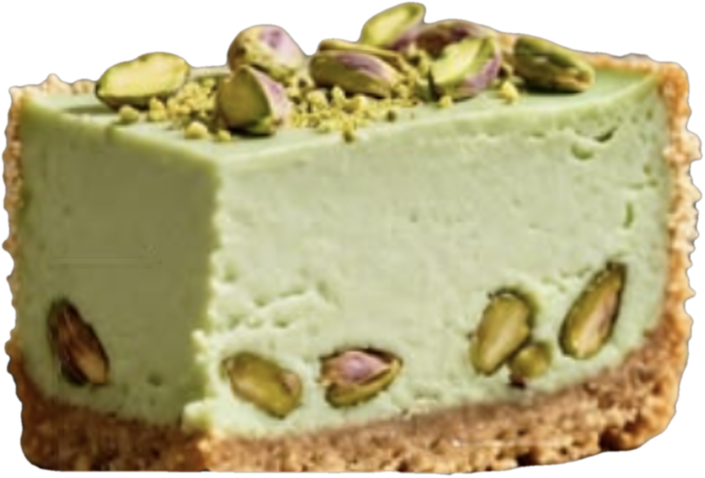
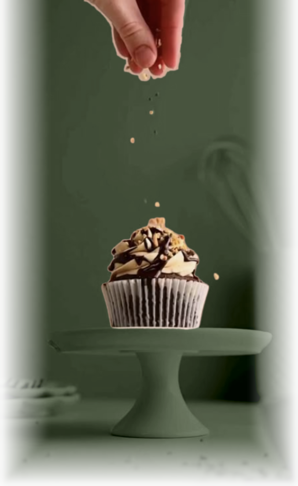

SAJUMA
@SAJUMA_REPOSTERIA
Todo empezó con una pregunta…
¿se lo
daría a
mis hijos?
DESLIZA →
SAJUMA
@SAJUMA_REPOSTERIA
Soy Miryam.
Mamá antes que pastelera.
SAJUMA
@SAJUMA_REPOSTERIA
Quería que en casa celebráramos con postre… sin descuidar lo que más amo: su salud.
SAJUMA
@SAJUMA_REPOSTERIA
Así que empecé a cambiar ingredientes.
uno por uno.
SAJUMA
@SAJUMA_REPOSTERIA
Y descubrí algo:
lo rico también
puede cuidarte


SAJUMA
@SAJUMA_REPOSTERIA
Si era bueno para mi familia, podía ser bueno para la tuya.
SAJUMA
@SAJUMA_REPOSTERIA
Así nació
PRÓXIMO CAPÍTULO →
LO QUE LLEVA TU POSTRE